贵人不可贱用~
识别文字连续阅读 · 原图附后
原始 PDF 不公开，本页展示捕获页面的截图。 识别文字按页序连续显示，全部原始截图附在文末，便于对照。文字由视觉转录整理，尚未经人工逐字核对，可能存在错字、漏字、漏行、顺序或断行错误。留言与作者回复仅限截图中可见的内容，不代表完整线上留言，也未据此推断留言总数。
OCR 识别提示（待核对）
- OCR/视觉转录文字，尚未逐字校对；可能错字、漏字、漏行，数字、姓名、表情、标点及断行也可能有误，请以截图为准。
- 这里只保留 PDF 已截到的正文、留言和作者回复；截图以外的留言不在此存档中。
- 未从截图推断留言总数或回复关系；手机界面文字也可能混入 OCR。
- 方括号中的表情说明是转录注释，原始表情请对照截图。
- 页面边界仅露出少量字形的重复行归到文字主体可见的相邻页；不推断缺失内容。
识别文字
文字按截图页序整理；页边重复行仅保留一次，原始 PDF 不公开。方括号中的表情说明为转录注释。
第 1 页对照原图
贵人不可贱用~
原创 天玑 金渐成 2026年10月16日 11:13 美国
前些天提过“贵人不可贱用”，一笔带过。
与“贵人不可贱用”并行的做法，还有远离持续消耗你的垃圾人。
现在的舆论环境很差，社会戾气、焦虑和欲望都很重，功利心和目的性都很明显。
鸡不会妒忌拥有整座粮仓的主人，但绝对不能容忍身旁的鸡多啄一粒米。
在这种环境中，学会不被裹挟、保全自身能量不被消耗，就已经胜过绝大多数人。
“不争就是大争”，有些人做事的目的性太功利，最终往
第 2 页对照原图
往做不好。
比如社交，动不动就想向上社交，就没想过自身有什么价值，是哪盘菜。不相互算计，能真正走到一块的，才能成为朋友。相互算计、带有功利目的的，最多只能算猎物和食物。
比如做自媒体，随手做记录的往往因其所具有的独特性和价值，脱颖而出的概率大；为了红而去刻意营造的，一般跑不出来，就算跑出来了也不持久。
由此衍生出一句话“有钱人根本不炫耀”。这句话其实也不对，人是铁，“范”是刚，一天不装憋的慌。觉得有钱人不装，要么是对“有钱人”的理解有误，要么是没看懂他们炫耀的是什么。
炫耀/装x是分很多层级的：
最初级的是物质层面，比如钱、豪宅、豪车、奢侈品等；往上是地位，如名气、奖项；再往上是社交和文化层面，如人脉、圈层、资源；然后是文化，如艺术、古董、葡萄酒、教育、礼仪等；
压轴的是关系，如长期稳定的婚姻/伴侣、和谐的家
第 3 页对照原图
庭、真心的朋友，这是富豪圈非常稀缺的炫耀品；最后是最高级的终极炫耀品：传承。如优秀子女、家风/家教、家族和企业。
我一般看对方关注的焦点在哪，大概就能知道他的层级在哪。
大多数人，还处于对最初级物质层面的关注。只有少数人能会关注到第四层级的炫耀，极少数人，才能读懂第五六层级的炫耀，这类往往已经是同层级的同类人。
现实中，由于每个人所处阶段和层次不同，往往不容易从对方的角度去理解对方的意思，错失贵人，或贵人贱用。
我今年也经历过这事，之前觉得有个总结投资概要做得还行，想着给点流量帮扶年轻人，结果最终数次给我添麻烦，堪称无妄之灾。最终我的反省又回到了“人对了，事情就对了”这一尺标上。
但这属于个例。有些帮扶效果很不错，贫困生助学和助农等，精神受益颇丰，正反馈的循环仍在持续。
很多人命中并不缺贵人，缺的是不会把握。
第 4 页对照原图
贵人给的是稀缺的信任额度，以及机会、资源等杠杆，不是随取随用的零花钱，不要消耗在低价值、低回报、不靠谱的事情上。
所谓好钢用在刀刃上，人情也一样，额度有限，要用在关键选择、重要引荐、重大难题、对方擅长且你已经尽力仍无法解决的事。
具体做法是请求要具体、要尊重边界、允许对方拒绝、事后反馈感恩。而不是拿着鸡毛当令箭，擅作主张，消耗对方。
毕竟，对方帮忙，往往不只是出力，还可能搭上自己的声誉做隐形背书，是出于意愿和欣赏的一种隐形投资，贱用会导致欣赏变反感，严重的直接导致机会的大门被关上。
我这一生，贵人很多。
影响最大的，是我曾祖母。她享百岁高寿，无疾而终，想来也是她的福报，临走前还报过刚出生不久的我。
后来，我听着周围的人讲她的故事，从经商到县城首富、地主，再到不阻拦子女投身革命，帮扶村民免税给
第 5 页对照原图
粮，又在历史的分岔路口献上大部分家产，带家人安然穿过动乱期延续至今。
很有智慧的一个老人，我也受她影响，跟着做些自己力所能及的事，去帮助有需要的人。
其次是我年少时的标杆，也是我亲戚的孩子，他对我的影响也非常大，尽管我们见面次数寥寥无几。
8岁时，在他家院子里的茶花树旁，他把我举起来时说的那句话“好好读书，长大后去看看世界，世界很大”，激励了我很长一段时间，让我从年少的懵懂，变成有目标有方向的少年。
此后的数十年，我追寻他的脚步，一步步走向世界。前段时间跟他碰面时，我说到了这段往事，他也很意外，未曾想过自己当年的一个举动，会影响到一个人至此。
这是善因结善果。有他的存在和引领，如同一个人走过的足迹，在地上留痕，我顺着这个痕迹往前摸索，一步步走到了年少时自己不曾想过的位置。
还有我奶奶，她整体是偏负面的教学，虽然她对我也很好。
第 6 页对照原图
少年时，她给我做的那些示范，做生意“以次充好、偷工减料”，后来都被我引以为戒，做为负面的典型案例；她太偏爱某些子女，一碗水没端平，导致兄弟姐妹不合、纷争四起，也被我看在眼里，记在心里，时常用于自省。
高中的政治老师，也是个负面案例，太虚伪，整体开口闭口宏大叙事，导致我成年后直接对宏大叙事免疫。
这俩类不得不说，也是一大功劳，也算得上是贵人。
初中的班主任对我影响也很大，他肯定我的文笔和学识，鼓励我走自己感兴趣的路。
还有我外公外婆，我外婆没讲过什么大道理，但她做事特别细致细心，我母亲也延续了她这个习惯，做事尽心尽力，追求极致。
还有我的叔公，他性情温和，平凡的语言和动作，总能在他那演化出不一样的东西；在我们家困难时，也多次伸出援助之手，也是个对我影响极大的人。我至今每年都会回去看看他们，带点东西，坐着陪他们聊聊天。
我的父母，对我的影响都很大。
第 7 页对照原图
这些都是成长过程中的贵人，小时候没意识到，如今人到中年再回首，慢慢就发现了他们对我的影响，无处不在、润物细无声。
看不清的比看得清的更广阔。人们总是在自己命运的途中，与命运不期而遇。
这些年，慢慢明白了，“当你真正明白命运天注定的时候，你就获得了真正的自由”。
就这样吧。
历史文章 · 目录
上一篇 · 在人潮中~
作者提示：个人观点，仅供参考
阅读 3.6万
留言 32
第 8 页对照原图
Young 浙江 28分钟前 [赞29]
特斯拉发布会切片视频下面的评论真是难看，全部透露着“不能输”
金渐成 作者 24分钟前 [赞192]
特斯拉经常被拉来对标，被用来对标的东西，往往是好东西，只有好东西才会被用来对标。我们很少见垃圾被用来对标，原因就在这。
Feynman的… 湖北 28分钟前 [赞20]
机哥，真心请教，小孩鼻炎太遭罪了，主要原因还是城市空气质量一言难尽，有没有好的预防或处理方法呀
金渐成 作者 27分钟前 [赞82]
家里装空气净化器，然后买洗鼻器给孩子洗洗鼻，没有太多的好办法，大环境没法改变，只能从小环境入手。
梅湘如故 广东 24分钟前 [赞14]
还要多运动和锻炼身体，手不要老是扣鼻子，现在小孩大部分是过敏性鼻炎。饮食也要注意。改变不了环境，就改变娃[呲牙]
1条回复 [折叠]
Time 江苏 26分钟前 [赞35]
压轴的是关系，如长期稳定的婚姻/伴侣、和谐的家庭、真
第 9 页对照原图
心的朋友。这句话对普通人也很适用，现在人的适应不了慢节奏，都想快速拿结果，太需要自己我沉淀和稳定和家庭朋友关系帮助自己了。
金渐成 作者 20分钟前 [赞71]
这三样都需要投入时间和精力去经营和维护，需要有很大的耐心，再怎么心急都没用。
chaos 山东 26分钟前 [赞16]
玑哥贵人运也很旺哇
金渐成 作者 18分钟前 [赞65]
嗯，连写自媒体都遇到了贵人，也是她的答疑解惑，我才能一步步走到现在，又经过她搭线认识了另一个自媒体博主，学到了应对纷繁复杂的大众情绪的方式。这个以前写过。
ROCKY 北京 27分钟前 [赞44]
脑静者多富，心静者多贵，神静者多寿。
金渐成 作者 16分钟前 [赞50]
我们家族貌似都比较长寿，曾祖母百岁高龄，爷爷也接近百岁，再往上还有个超过105岁的，具体我也没问，隐约记得父母和我奶奶说过的。
崔宜 北京 17分钟前 [赞16]
玑哥多讲讲做人吧，和讲投资是异曲同工的，都是在传道👍
第 10 页对照原图
金渐成 作者 10分钟前 [赞47]
做人好难，屁股决定脑袋，但要恪守最基本的道德底线和原则。看人我比较会，看他在最低谷的言行举止，是否突破底线，大概就知道他能不能做朋友、能走到哪一步。
崔宜 北京 27分钟前 [赞20]
理解不了贵人的”贵”，那贵人也就不是这个人的贵人，没办法，世界上傻子太多，识贵人的能力严重匮乏。自由，是最难得到的两个字
金渐成 作者 15分钟前 [赞46]
急功近利者多，能有长远眼光的耐心者少。
wet 上海 16分钟前 [赞16]
视野很重要..偶尔能理智地以相对高的维度看自己，会觉得很多情绪和在意的东西只是浪费时间
金渐成 作者 13分钟前 [赞37]
学会换位思考，这个能力非常重要。我以前就经常换位思考，尝试以我标杆的角度切入去看问题，成长都快。
蒋军 江苏 16分钟前 [赞22]
记得玑哥之前说过，35岁、40岁以后还在发各种社交照片的，可能一辈子顶点就在那，往后大概率是下坡路。反求诸己，自我成长。
金渐成 作者 13分钟前 [赞36]
第 11 页对照原图
这是大数据总结，我只不过是复述出来而已。
飞飞要早睡Q… 江苏 17分钟前 [赞21]
一直克制自己的浅薄欲望，保持好边界，虽知难达到先生的高度，只想尽可能的靠近，努力往前走一走就很开心了。日拱一卒，功不唐捐，时常先生的一句话可以抚慰内心的焦虑和经历的风尘～
金渐成 作者 7分钟前 [赞36]
读者中，你是唯一一个见我超过两次的，见了三次面，每次感觉都不一样，还是有成长的。提前祝你们小两口订婚快乐，一切尽意、百事从欢🌹
杜鹏 广东 17分钟前 [赞19]
细心和敏感（非贬义）往往是人际交往的关键，懂尊重，知感恩，明边界，最重要的还有在能力允许时给予他人的善意。
金渐成 作者 10分钟前 [赞21]
✓
叮当猫 广东 18分钟前 [赞11]
“鸡不会妒忌拥有整座粮仓的主人，但绝对不能容忍身旁的鸡多啄一粒米”，这句话太有感触了👍
金渐成 作者 6分钟前 [赞15]
这就是之前写过的“螃蟹效应”。
狮子bb1[昵称末尾橙色符号不明] 广东 18分钟前 [赞10]
第 12 页对照原图
家风家教真的是终极财富，赢在起跑线的东西
金渐成 作者 5分钟前 [赞14]
传承这事，只有跨过了前面那几个台阶，才有机会涉足这一步，能到这一步的，都是人中龙凤。
漫步风险 广东 20分钟前 [赞5]
机哥，你昨天说找google做的模型是像梁文峰那种的吗？还是一个简单的规则模型
金渐成 作者 3分钟前 [赞10]
我们公司的对冲基金用的模型，开发快十年了，价格不低，六七年前写房地产预测的时候，经常用它来推演，写过这段历史。
林熹丹青 马来西亚 20分钟前 [赞6]
家教/家风确实是顶级的传承，谁也抢不走，跟有钱没钱是两码事。有时说熊孩子“没家教”，三个字，就把对方全家问候一遍了。
金渐成 作者 2分钟前 [赞9]
确实，特别是对有钱人家的孩子说“没家教”这几个字，简直是直接把对方的脸呛在粪坑里摩擦。
第 13 页对照原图
[本页无正文或评论，仅页脚互动数字：1523、1463、303、32。]
原始图片 · 13 页
第 1 页 · 原始截图

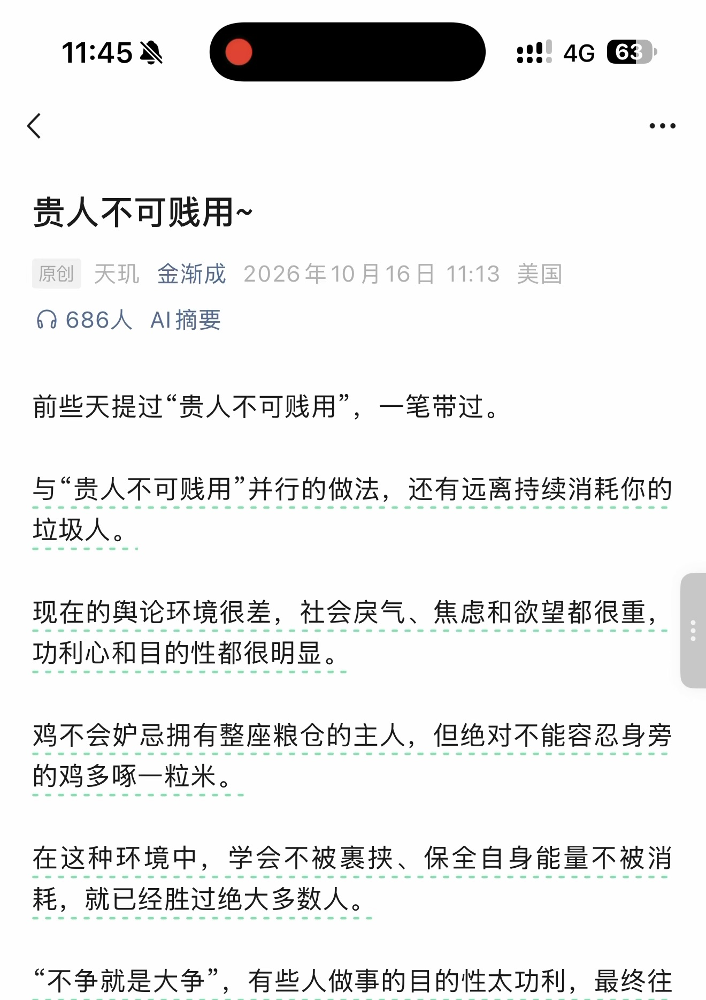
第 2 页 · 原始截图

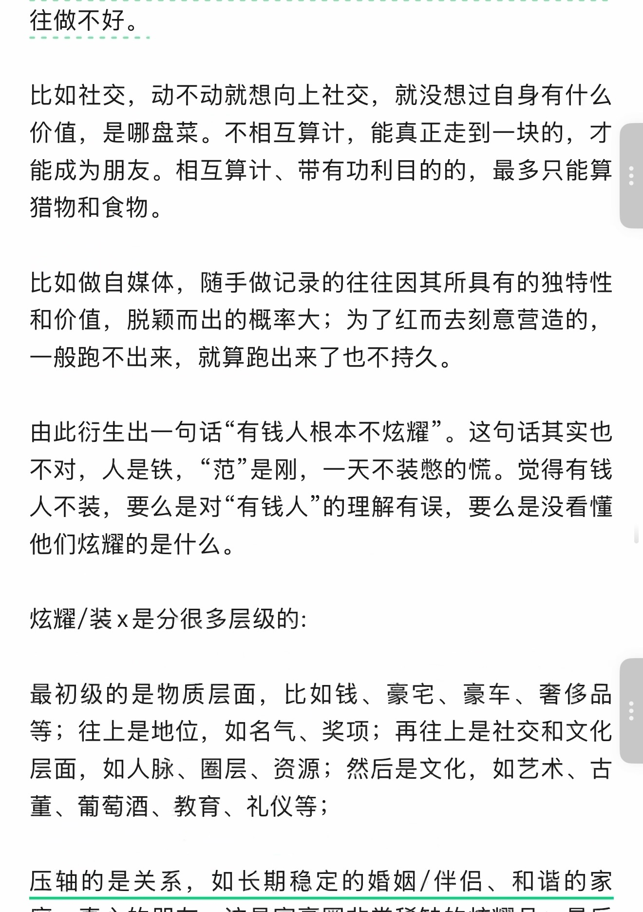
第 3 页 · 原始截图

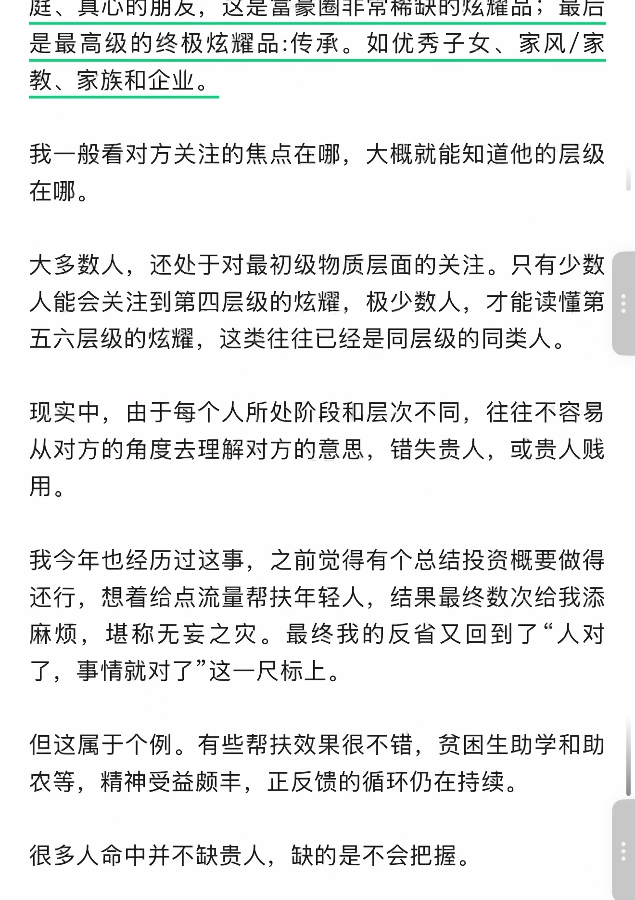
第 4 页 · 原始截图

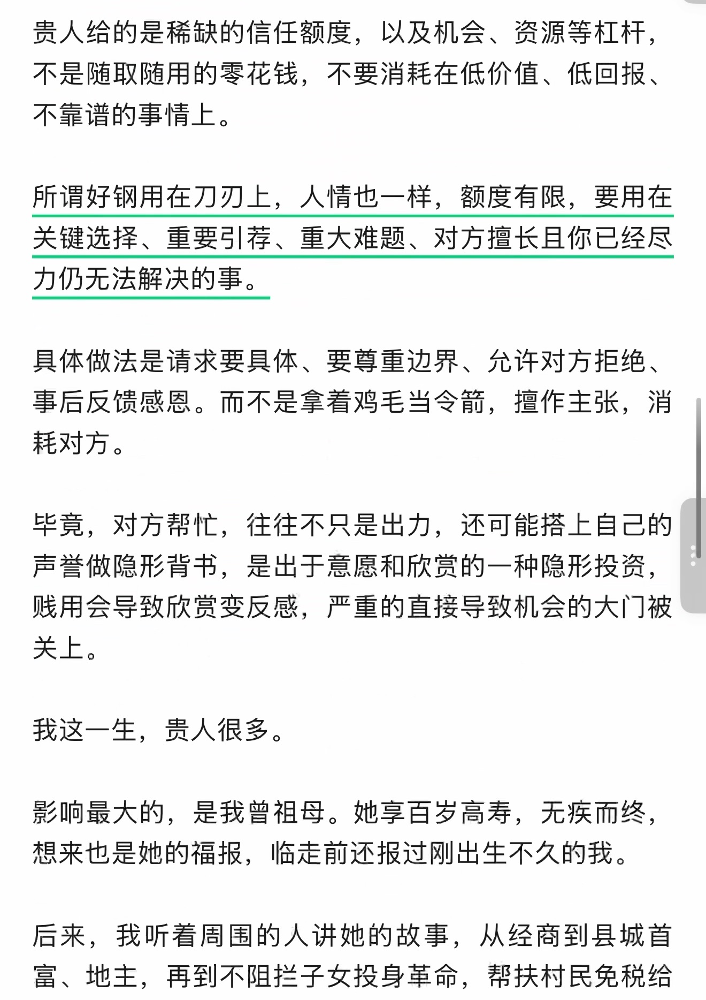
第 5 页 · 原始截图

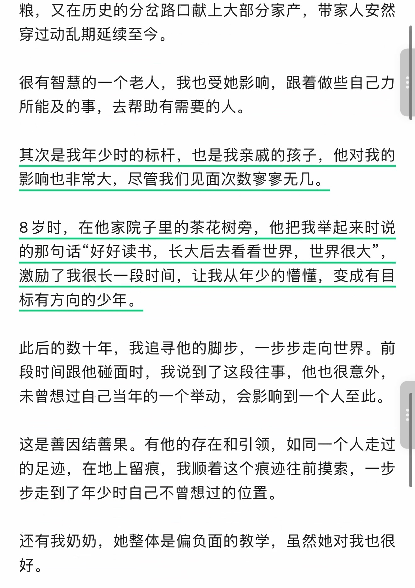
第 6 页 · 原始截图

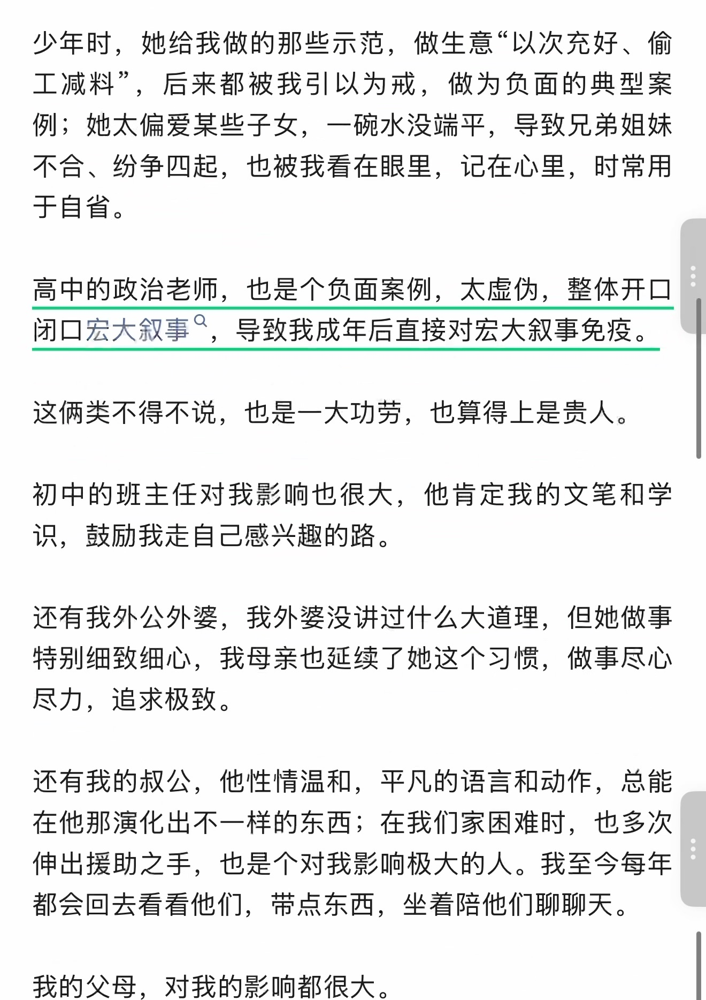
第 7 页 · 原始截图

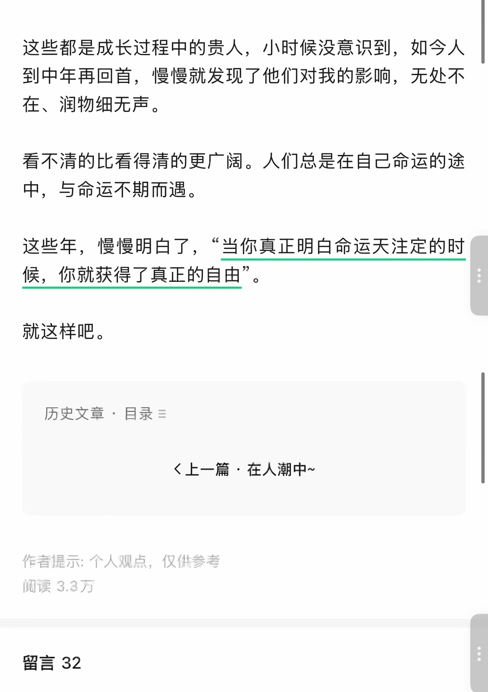
第 8 页 · 原始截图

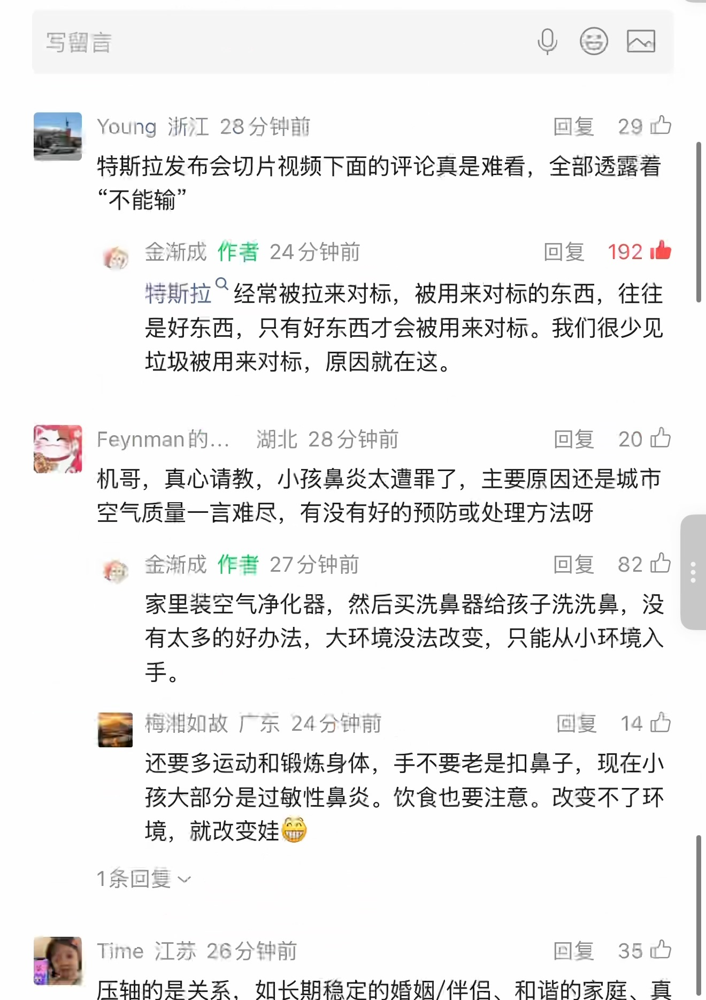
第 9 页 · 原始截图

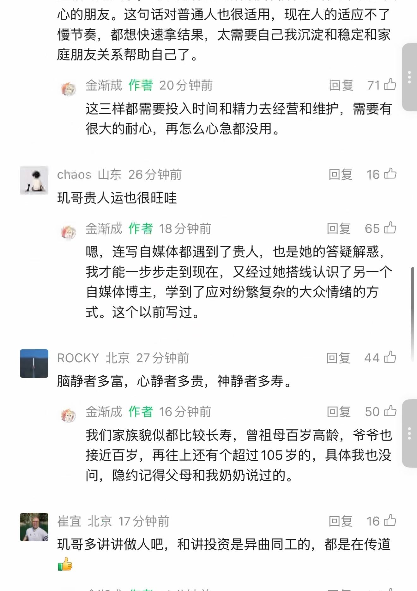
第 10 页 · 原始截图

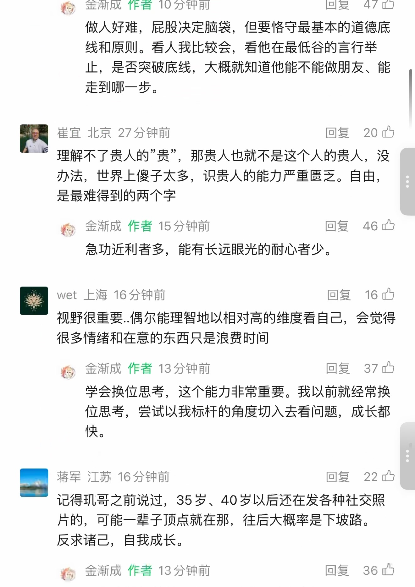
第 11 页 · 原始截图

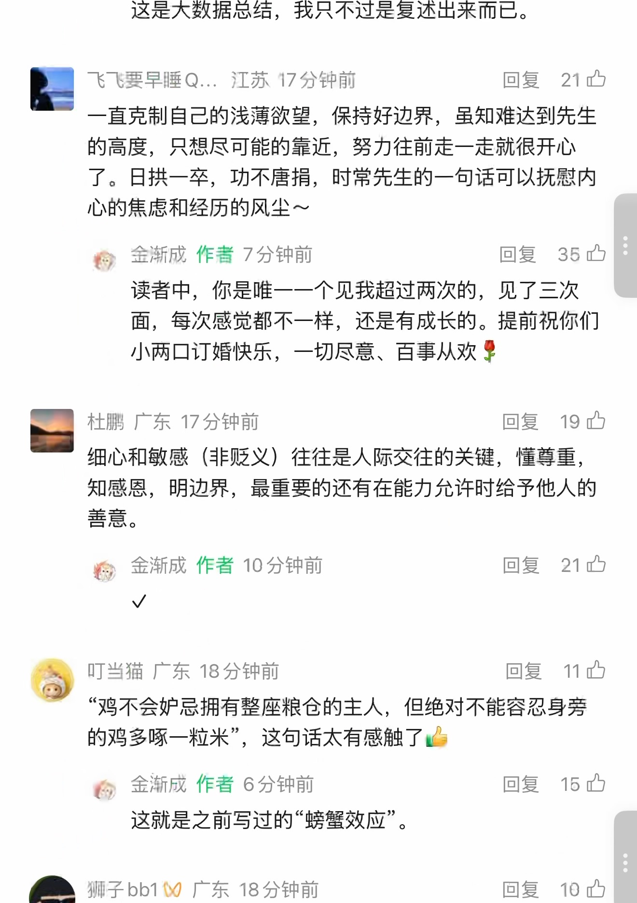
第 12 页 · 原始截图

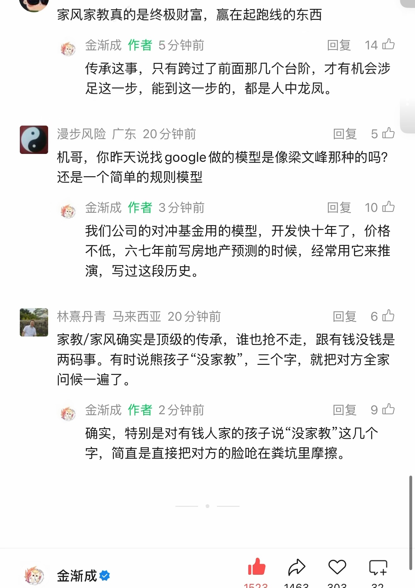
第 13 页 · 原始截图

按日期浏览全部来源（同日按条目标识排序）
回到页首